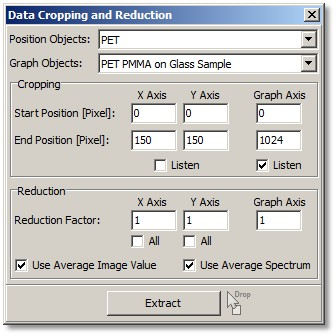

|
描述
使用数据裁剪和缩减对话框，可以裁剪数据的部分区域并减少像素数量/分辨率。
输入和结果
输入：
结果：
裁剪和/或缩减后的数据对象。
用户界面

位置对象（组合框）：
显示输入数据对象，它们
选中的对象显示在预览窗口中。
图谱对象（组合框）：
显示输入数据对象，如图像光谱、线光谱或单个光谱对象（如果它不定义空间或其他位置）。用于在拖放多个对象时切换预览。
裁剪
开始/停止位置 X/Y轴（整数编辑）：
可用于裁剪图像或图像光谱对象。
开始/停止位置 X/Y轴监听（复选框）
如果选中，可以简单地在图像查看器中标记一个矩形以裁剪图像或图像光谱数据对象。
开始/停止位置图谱轴（整数编辑）：
可用于裁剪光谱轴的一部分。
开始/停止位置图谱轴监听（复选框）：
如果选中，可以简单地在图谱查看器中标记一个区域以裁剪光谱对象。
缩减
缩减因子 X/Y轴（整数编辑）：
可用于更改图像或图像光谱数据对象的像素数量/分辨率。
示例：
因子1表示不缩减。因子2表示结果仅包含一半的像素数，通过使用原始数据的每隔一个像素。因子3表示结果仅包含所有原始像素的三分之一，使用原始数据的每隔三个像素。
如果选中了"使用平均图像值"（用于空间轴）或"使用平均光谱"（用于光谱轴）复选框，则数据使用2、3、4...个像素的平均值/光谱进行缩减，见下文。
缩减因子图谱轴（整数编辑）：
可用于更改光谱数据对象的像素数量/分辨率。
缩减X轴全部（复选框）：
对整个X轴进行数据缩减。结果是一个线图谱对象（垂直线）。
缩减Y轴全部（复选框）：
对整个Y轴进行数据缩减。结果是一个线图谱对象（水平线）。
使用平均图像值（复选框）：
如果选中，数据缩减使用所有缩减像素的平均值进行。例如，如果一个轴的缩减因子为2，则结果像素是2个相邻原始像素的平均值。
如果未选中，缩减的原始像素将被跳过，不在结果中使用。
使用平均光谱（复选框）：
如果选中，缩减图像光谱数据对象的结果光谱是从缩减的相邻图像像素计算的平均光谱。例如，如果一个轴的缩减因子为2，结果光谱是两个相邻像素的两个光谱的平均值。
如果未选中，仅使用单个光谱，缩减的原始光谱将被跳过，不在结果中使用。
提取（按钮和拖放区）：
计算并提取裁剪/缩减后的数据。您可以通过在此按钮上拖放多个数据对象来进行批处理。
请注意，批处理仅当拖放的数据对象与对话框中的数据对象具有相同的维度时才有效。图谱批处理仅当当前对话框中只有一个图谱对象时才有效。
预览窗口
根据输入数据对象，有预览图像和/或预览图谱查看器。
一个窗口始终显示原始大小，另一个窗口显示裁剪或缩减后的预览。
例如，如果您拖放